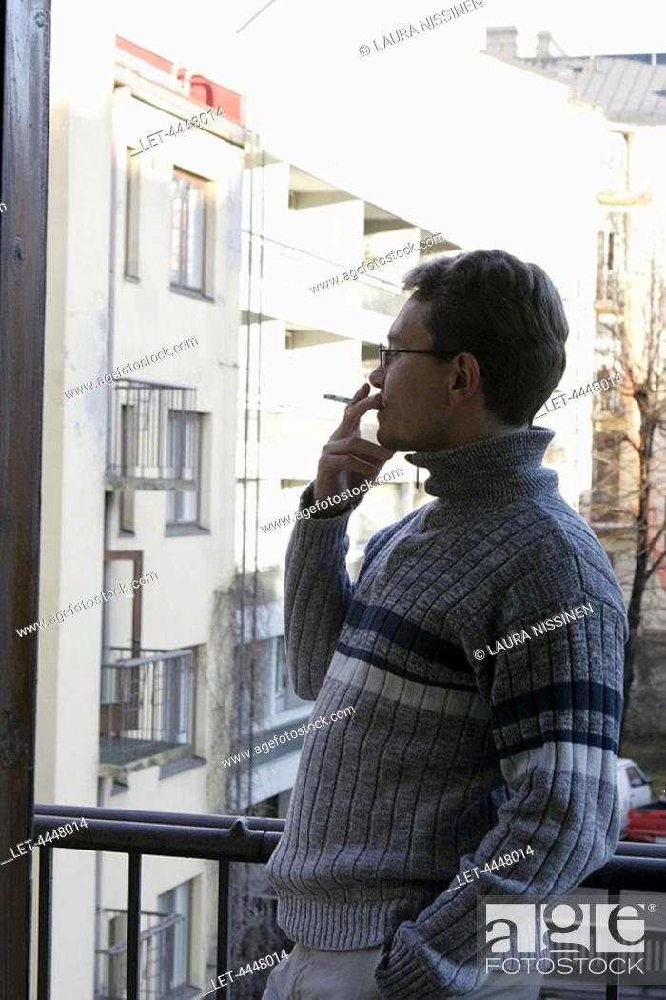
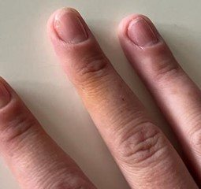
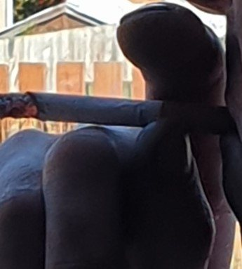
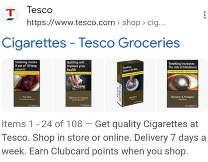
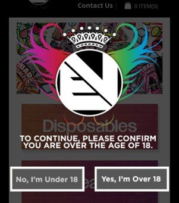
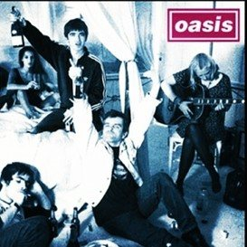
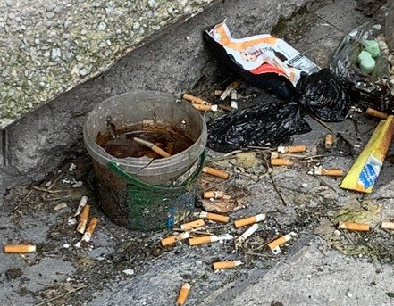

We visually conveyed lived experience using a method called Photovoice. We took photographs illustrating the topics as they exist in our lived and physical environments. We present and discuss visual data, with captions we developed to describe what images convey.
Copy still to comeEach plate needs its community-developed caption, and the titles below are taken from the original filenames so should be checked. Send a plain list of title and caption and they will drop in.

Breath of Fresh AirCaption to be added.Breath of Fresh Air IICaption to be added.Breath of Fresh Air IIICaption to be added.Chain of EventsCaption to be added.

Chain of Events IICaption to be added.

Chain of Events IIICaption to be added.

Delivered to Your DoorCaption to be added.

Delivered to Your Door IICaption to be added.

Follow Your IconsCaption to be added.Follow Your Icons IICaption to be added.

Pollution on Our PlanetCaption to be added.Pollution on Our Planet IICaption to be added.